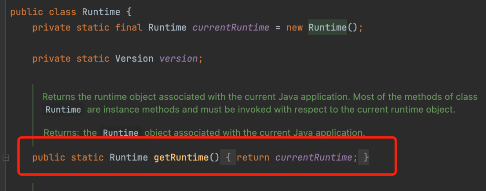

java安全-01反射
java 安全-反射
在 java 安全研究中，反射的一目的，就是绕过一些沙盒
动态特性指的是：代码中改变变量，导致这段代码产生功能性的变化。
forName()
正常情况下，除了系统类，要使用类，必须要先 import，但是 forName 不需要，可以加载任意类。
例如
public static void execute(String className,String methodName) throws Exception{
Class clazz = Class.forName(className);
clazz.getMethod(methodName).invoke(clazz.newInstance());
}- forName:获取类
- newInstance:实例化类对象
- getMethod:获取函数
- invoke:执行函数
当然，除了forName 可以获取类之外，还可以使用java.lang.Class对象：
obj.getClass():如果上下文中存在某个类的实例 obj,就可用 getClass 获取他的类。Test.class:已经加载了类，想获取到他的对象，那么直接拿属性就行。但是他在编译时就加载完了，所以它不属于反射。
forName()重载
基本重载
Class<?> forName(String className) throws ClassNotFoundException;
根据指定的类名（包含完整的包名和类名）来加载相应的类。如果类存在，它将返回该类的 Class 对象；如果类不存在，它将抛出 ClassNotFoundException。带参数重载
Class<?> forName(String className, boolean initialize, ClassLoader classLoader) throws ClassNotFoundException;
如果类存在，这个方法会返回该类的 Class 对象；如果类不存在，它也会抛出 ClassNotFoundException。如果设置了 initialize 为 true 并且类尚未初始化，则会调用类的静态初始化器（static{} 块）。
_ className: 类名，包含完整的包名和类名。
_ initialize: 一个布尔值，如果设置为 true，则会在加载类的同时初始化类。 * classLoader: 用于加载类的类加载器。就是告诉 jv 如何去加载这个类，java 的默认 classLoader 就是根据完整类名去加载。例如java.lang.Runtime
那么什么是类初始化呢？
- 类被首次引用：当 JVM 第一次使用某个类时，如果该类尚未被加载和初始化，则会触发类的初始化过程。
- 创建类的实例：创建类的实例时，如果该类尚未被加载和初始化，则会触发类的初始化。
- 访问类的静态变量：如果一个类的静态变量被引用，并且该类的
() 方法尚未执行，则会触发类的初始化。 - 调用类的静态方法：如果一个类的静态方法被调用，并且该类的
() 方法尚未执行，则会触发类的初始化。 - 反射调用：使用 Java 反射 API（如 Class.forName()）加载一个类时，如果该类的
() 方法尚未执行，则会触发类的初始化。 - Java 平台更新：当 JVM 启动时，它会初始化 Java 平台类，包括 java.lang.Object、java.lang.String 等。
如果运行下面代码，首先会调用静态初始化器，实例初始化块会放在 super()后面，所以最后才会调用构造函数。
public class test{
{
System.out.printf("{}"+this.getClass());
}
public test(){
System.out.printf("test()"+this.getClass());
}
static{
System.out.printf("static"+test.class.getName());
}
}所以可以利用 static 进行恶意类的构造
public void test2(String name) throws Exception {
Class.forName(name);
}package org.example;
import java.io.BufferedReader;
import java.io.IOException;
import java.io.InputStream;
import java.io.InputStreamReader;
import java.lang.Runtime;
import java.lang.Process;
public class test1 {
static {
try {
Runtime rt = Runtime.getRuntime();
String[] commands = {"ls", "/Users/lehaoxu/Desktop/blog/blog"};
Process pc = rt.exec(commands);
try (InputStream inputStream = pc.getInputStream();
BufferedReader reader = new BufferedReader(new InputStreamReader(inputStream))) {
String line;
while ((line = reader.readLine()) != null) {
System.out.println(line);
}
} catch (IOException e) {
e.printStackTrace();
}
pc.waitFor();
}
catch (Exception e) {
// do nothing
System.out.println("1");
}
}
}通过 forName()获取类之后，可以使用反射来获取类的属性，方法，也可实例化类并调用其方法。
newInstance()
class.newInstance()可以调用类的无参构造函数。如果类的构造函数是私有的，或者没有无参构造函数，就会调用失败。
例如
Class cl = Class.forName("java.lang.Runtime");
cl.getMethod("exec", String.class).invoke(cl.newInstance(),"whoami");因为 Runtime 是单例设计模式，他的构造函数是私有的，只有类初始化的时候会执行一次构造函数，后续只能 getRuntime 来获取这个对象。
所以会调用失败，报错
currentRuntime是一个静态变量，所以类在加载时，也就是Class.forName("java.lang.Runtime");时就会被初始化，调用getRuntime()就会返回 Runtime 的对象，也就是currentRuntime。

Class cl = Class.forName("java.lang.Runtime");
Process process = (Process) cl.getMethod("exec",String.class).invoke(cl.getMethod("getRuntime").invoke(cl), "id");
Class cz = Class.forName("org.example.test");
cz.getMethod("test3", Process.class).invoke(cz.newInstance(),process);
Runtime.exec 的重载
exec(String command)
这个重载接受一个字符串，表示要执行的命令。Java 会自动将这个字符串分割成命令和参数。
Runtime.getRuntime().exec("whoami");exec(String command, String[] envp)
这个重载除了接受命令字符串外，还接受一个环境变量数组。环境变量数组中的每个元素应该是 name=value 的形式。
String[] envp = {"PATH=/usr/local/opt/openjdk@11/bin"};
Runtime.getRuntime().exec("javac", envp);exec(String command, String[] envp, File dir)
这个重载在第二个重载的基础上增加了指定工作目录的功能。File dir 参数指定了命令执行时的工作目录。
String[] envp = {"PATH=/usr/local/opt/openjdk@11/bin"};
File dir = new File("/Users/xxx/Desktop");
Runtime.getRuntime().exec("javac", envp, dir);*exec(String[] cmdarray)
这个重载接受一个字符串数组，其中第一个元素是要执行的命令，后续元素是该命令的参数。
String[] cmdarray = {"ping", "127.0.0.1"};
Runtime.getRuntime().exec(cmdarray);exec(String[] cmdarray, String[] envp)
这个重载在第四个重载的基础上增加了环境变量数组。
String[] cmdarray = {"javac", "HelloWorld.java"};
String[] envp = {"PATH=/usr/local/opt/openjdk@11/bin"};
Runtime.getRuntime().exec(cmdarray, envp);exec(String[] cmdarray, String[] envp, File dir)
这个重载在第五个重载的基础上增加了指定工作目录的功能。
String[] cmdarray = {"javac", "HelloWorld.java"};
String[] envp = {"PATH=/usr/local/opt/openjdk@11/bin"};
File dir = new File("/Users/xxx/Desktop");
Runtime.getRuntime().exec(cmdarray, envp, dir);invoke执行的方法如果是普通方法，第一个函数是类对象，如果是静态方法，第一个函数就是类。
getConstructor
如果一个类没有无参构造方法，也没有类似单例模式里的静态方法
有公共有参构造方法的就需要用到getConstructor。getConstructor接收的参数是构造函数列表类型。因为构造函数也支持重载，所以必须用参数列表类型才能唯一确定一个构造函数。
获取到构造函数后，使用newinstance来执行
除了Runtime还可以使用ProcessBuilder来执行 start()命令
ProcessBuilder 构造函数
- ProcessBuilder(List command)
这个构造函数接受一个命令列表，其中第一个元素是要执行的程序，其余元素是传递给该程序的参数。
List command = Arrays.asList("java", "-version");
ProcessBuilder pb = new ProcessBuilder(command);Class c = Class.forName("java.lang.ProcessBuilder");
Process process = (Process)((ProcessBuilder)c.getConstructor(List.class).newInstance(Arrays.asList("ping","127.0.0.1"))).start();
Class cz = Class.forName("org.example.test");
cz.getMethod("test3", Process.class).invoke(cz.newInstance(),process);如果分割开，那就是
//加载ProcessBuilder类
Class<?> c = Class.forName("java.lang.ProcessBuilder");
//获取ProcessBuilder的构造函数
Constructor<?> constructor = c.getConstructor(List.class);
//创建命令列表
List command = Arrays.asList("ping", "127.0.0.1");
//使用反射创建ProcessBuilder实例
Object processBuilder = constructor.newInstance(command);
//启动进程
Process process = (Process) processBuilder.getClass().getMethod("start").invoke(processBuilder);- ProcessBuilder(String… command)
这个构造函数接受可变参数，允许你直接传递命令和参数，而不需要先将它们放入列表中。
ProcessBuilder pb = new ProcessBuilder("java", "-version");如果用ProcessBuilder(String... command)构造函数。...代表的是这个函数的参数个数是可变的。也就是可变长参数，具体就不说了。在反射中就把它当作数组就行。至于为什么要用到二维数组，还没有理解。
Class clazz=Class.forName("java.lang.ProcessBuilder");
Process process = (Process)((ProcessBuilder)clazz.getConstructor(String[].class).newInstance(new String[][]{{"ping", "127.0.0.1"}})).start();全反射
// 获取ProcessBuilder类的Class对象
Class<?> clazz = Class.forName("java.lang.ProcessBuilder");
// 获取ProcessBuilder的构造函数
Constructor<?> constructor = clazz.getConstructor(String[].class);
// 创建ProcessBuilder实例，注意这里应该是一维数组，不是二维数组
Object processBuilderInstance = constructor.newInstance((Object) new String[]{"ls"});
// 获取start方法
Method startMethod = clazz.getMethod("start");
// 使用反射调用start方法
Object process = startMethod.invoke(processBuilderInstance);
System.out.println("Process started: " + process);
Class cz = Class.forName("org.example.test");
cz.getMethod("test3", Process.class).invoke(cz.newInstance(),process);关键方法
- start()
用于启动进程。它返回一个 Process 对象，你可以通过这个对象与新启动的进程进行交互。
Process process = pb.start();- command(List command) 和 command(String… command)
用于设置或更改要执行的命令。它们分别接受列表和可变参数，类似于构造函数。
pb.command(Arrays.asList("java", "-version"));
// 或者
pb.command("java", "-version");- directory(File directory)
用于设置工作目录。如果不设置，默认使用当前 Java 进程的工作目录。
pb.directory(new File("/path/to/working/directory"));- environment()
返回当前进程的环境变量映射。你可以通过这个映射来添加、删除或修改环境变量。
Map env = pb.environment();
env.put("VAR_NAME", "value");- redirectErrorStream(boolean redirectErrorStream)
用于设置是否将标准错误流合并到标准输出流中。默认情况下，错误流和输出流是分开的。
pb.redirectErrorStream(true);getDeclared
如果一个方法或构造方法是私有方法,就要用到getDeclared.
getDeclared,getMethod,getConstructor 区别
getMethod主要用于获取类的所有公共成员，包括类自身声明的 public 方法和从父类继承的 public 方法。getConstructor相比于getMethod可以反射有参数的构造函数的 public 类getDeclared系列例如 getDeclaredMethod，getDeclaredConstructor 可以反射类中的所有方法包括 public、protected、default（没有修饰符）和 private 方法。
例如 Runtime 这个类的构造函数是私有的。
Class clazz=Class.forName("java.lang.Runtime");
Constructor m=clazz.getDeclaredConstructor();
m.setAccessible(true);
Process process = (Process)clazz.getMethod("exec", String.class).invoke(m.newInstance(), "ls");
Class cz = Class.forName("org.example.test");
cz.getMethod("test3", Process.class).invoke(cz.newInstance(),process);这里的关键点是setAccessible(true)它表示在获取到一个私有方法后，修改它的作用域。
注意 java9 及以后的版本中为了加强代码的隔离性与安全性，引入了模块化系统，无法改变 Runtime 私有的构造函数作用域。
其他
org.example.test 中的 test3 方法是输出命令返回语句的。
public void test3(Process process) throws Exception {
BufferedReader stdInput = new BufferedReader(new InputStreamReader(process.getInputStream()));
String s;
while ((s = stdInput.readLine()) != null) {
System.out.println(s);
}
// 读取标准错误（可选）
BufferedReader stdError = new BufferedReader(new InputStreamReader(process.getErrorStream()));
while ((s = stdError.readLine()) != null) {
System.err.println(s);
}
}RecoveryAshes Blog